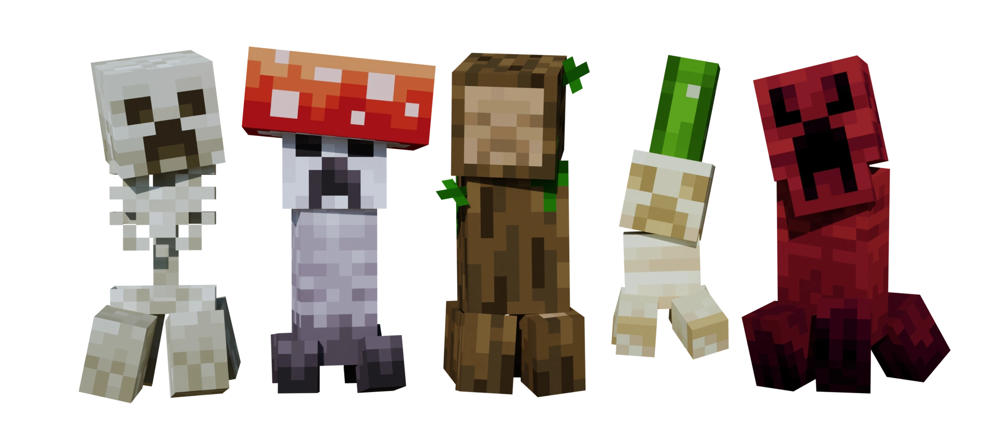

The creepers are everywhere! Check out these brand new creeper types!

Have you looked at your house and thought to yourself "damn, I wish there were mobs that could blow this up and destroy all my hard work"?
Well, in the very unlikely chance that you have, this addon is for you!
This addon adds in a truly immense amount (only 5 lol) new creepers to Minecraft Bedrock Edition.
Check out this walkthrough video for a demonstration of all the creepers in-game:
The Bonehead is a skeleton-type creeper with a few surprises up its sleeves... If it had any sleeves.
I won't spoil them for you though! Whack this creeper a couple times and you'll see what I'm talking about 👀
The stats are as follows:
The Sporeburst is a fungal creeper that spawns on Mushroom Islands. This means mushroom islands are no longer safe from monsters.
The Timberling is a treelike creature, and can be found wandering the forests. Despite the peaceful appearance,
they are still hostile, but they're also quite slow.
Upon exploding, Timberlings release a barrage of splinter projectiles in all directions.
The stats are as follows:
The Sandstreak likes to hide itself amongst cactuses in deserts 🌵. You might not spot it right away,
but if end up running by one you'll be sure to know when it jumps up and explodes in your face!
They're fast little buggers, and will explode a little faster than normal creepers too.
The stats are as follows:
The Rampage is a terrifying and unstable creeper variant. If you see it, run.
You are allowed to create a video featuring this content, but you must provide a link to this web page url, not a direct download. You must not otherwise redistribute this addon/map without direct permission from MACHINE_BUILDER.
By downloading this addon/map using the button below, you agree to the conditions listed.